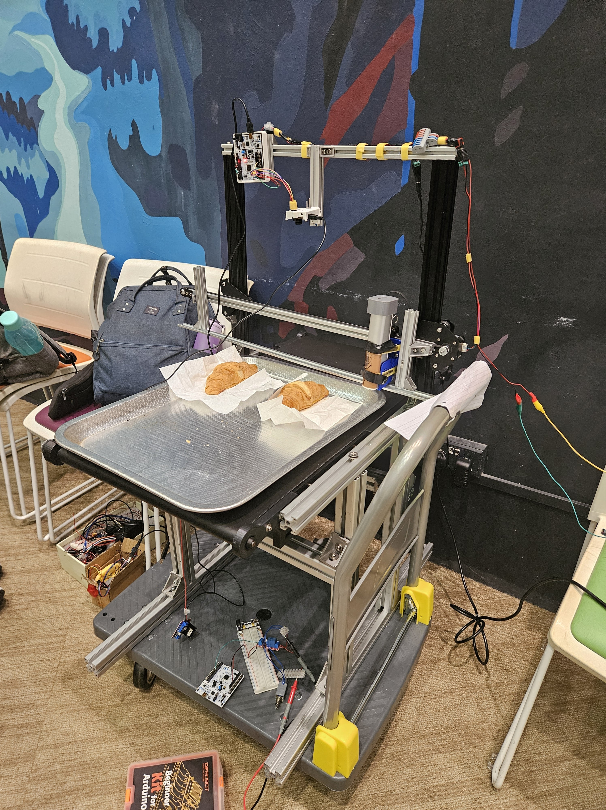

3D Food Printing Innovation

Objective of this project: To develop a System Design and Prototype for an innovative food printing system. Our goal is to create a system that enhances the presentation, customization, and efficiency of food preparation while considering the needs of various stakeholders, such as restaurants, caterers, and consumers.
Starting Point
We began by using the project specifications as guidelines. The problem space addresses the “what” of the issue. To better understand the needs in the 3D printed food industry, we studied various other domains where 3D printing food is utilized. This allowed us to analyze different functionalities and the needs those functionalities addressed.
Iteration 1: Gathering Functionalities
After consolidating a list of functionalities and needs from other domains into the problem space, we moved to the solution space. Here, we scrutinized the entire list of functionalities for clashing elements, such as laser food engraving and inkjet printing, which were logically incompatible. These were removed to ensure feasibility.
Iteration 2: Exploring Related Domains
We realized that many functionalities overlapped, hindering innovation. We decided to explore how similar functionalities were used in non-food domains in the hopes of finding alternative ways to creatively deploy these functionalities in the food domain. For instance, upcycling food waste like wheat and grape pomace to 3D print cookies parallels agricultural practices where residues are used to make biofuels. However, this approach had limited success due to domain incompatibility.
Iteration 3: Reverse Porting Functionalities
We reversed our approach by porting existing functionalities in the solution space to other domains. I focused on Pica, a disorder where individuals have strong urges to eat inedible objects. We explored the possibility of using 3D food printing to create edible objects that resemble these urges, particularly to prevent injuries in children.
However, we faced a significant constraint: the permanent inclusion of Evebot, a handheld 2D inkjet printer, in the solution space. This constraint required us to ensure all functionalities must fit with Evebot's capabilities, prompting us to iterate back to the problem space.
Iteration 4: Aligning with Evebot's Capabilities
We decided to work backwards from the solution space to the problem space, searching for opportunities within Evebot’s capabilities. We identified two potential domains: Inkjet Binding and Blindness. The team split into two to tackle these domains and determine which had the best viability.
For blindness, we identified a need where individuals struggle to write and fill out forms due to alignment issues. This led to the development of WiYG (Write it Yourself Guide), using a phone camera for feedback. Since Evebot functions as a pen, we aimed to develop a system that provides alignment feedback, making it more accessible for the blind.
Functionalities Discovered
- Personalized Nutrition: Creating meals tailored to individual dietary needs, enhancing nutritional value and user satisfaction.
- Texture Customization: Developing foods that are easier to chew and more appealing, particularly for elderly consumers.
- Sustainability: Incorporating food waste into new formulations to reduce environmental impact and promote sustainable practices.
- Shape Retention: Ensuring that printed food products maintain their designed shapes during and after post-processing for visual appeal and integrity.
Solution Implementation
Implementing these solutions required integrating them with Evebot's core capabilities. We used a feasibility filter to check the practical implementation of each functionality, ensuring no logical clashes. The final solution was then applied to other food-related domains to address broader industry gaps.
The project received positive feedback and was featured in several articles:

The Verge

CNet

Popular Mechanics